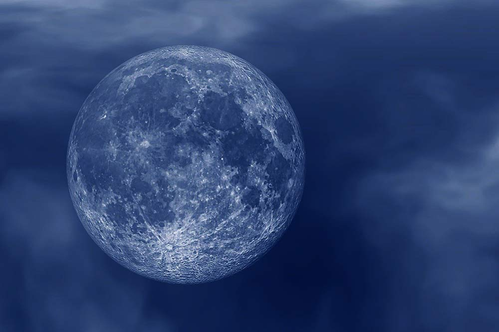
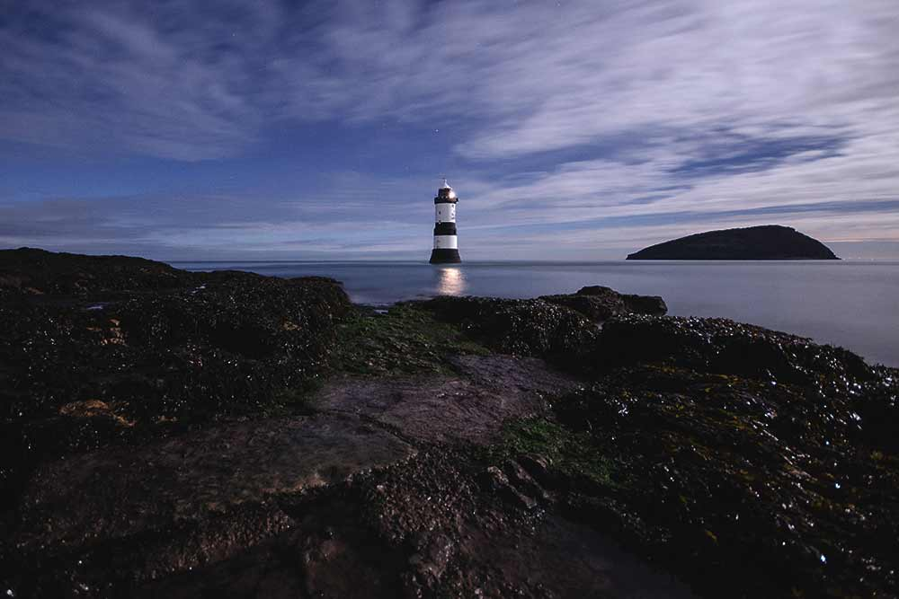
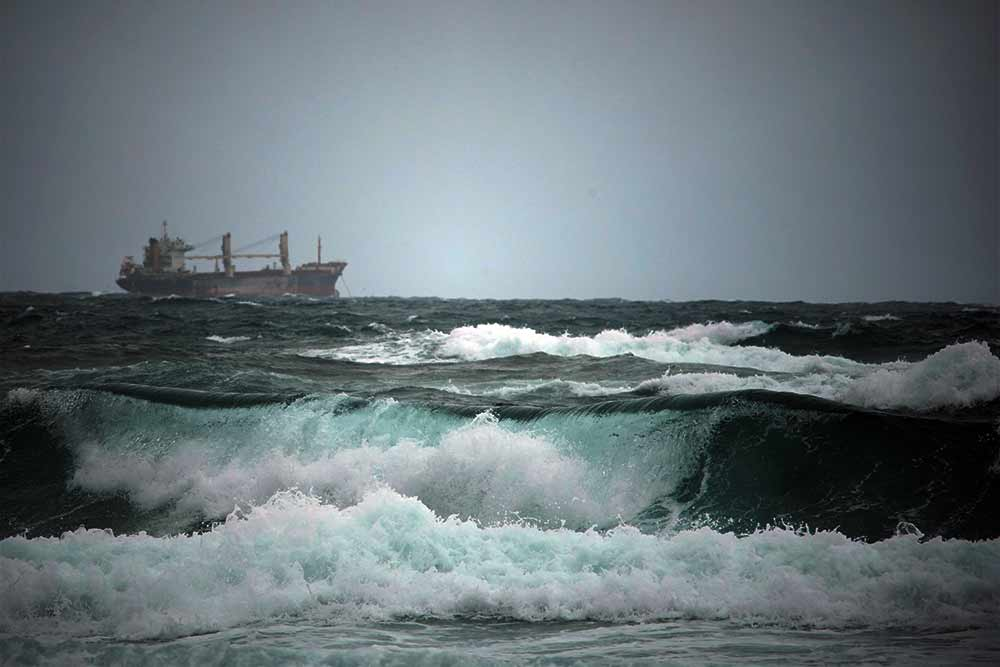

Levendale, Tasmania
2020/10/15
From Wikipedia, the free encyclopediaLevendale is a small settlement in the Southern Midlands Council area 53 km north of Hobart, Tasmania, Australia servicing the local farming community.The settlement has a historic primary school, established 15 April 1901, which also serves as a community centre and focal point for the area. In 2008, facing the threat of closure with falling enrolments, the community rallied to increase the population of the area and save the school...Read more
A History of the Birds of Europe
2020/10/16
From Wikipedia, the free encyclopedia A History of the Birds of Europe, Including all the Species Inhabiting the Western Palearctic Region is a nine-volume ornithological book published in parts between 1871 and 1882. It is mainly written by Henry Eeles Dresser, although Richard Bowdler Sharpe co-authored the earlier volumes. It describes all the bird species reliably recorded in the wild in Europe and adjacent geographical areas with similar fauna, giving their worldwide distribution, variations in appearance and migratory movements...Read more
Palace of Westminster
2020/10/15
From Wikipedia, the free encyclopedia The Palace of Westminster serves as the meeting place for both the House of Commons and the House of Lords, the two houses of the Parliament of the United Kingdom. Informally known as the Houses of Parliament after its occupants, the Palace lies on the north bank of the River Thames in the City of Westminster, in central London, England...Read more
List of mephitids
2020/10/15
From Wikipedia, the free encyclopediaMephitidae is a family of mammals in the order Carnivora, which comprises the skunks and stink badgers. A member of this family is called a mephitid. The skunks of the family are widespread across the Americas, while the stink badgers are in the Greater Sunda Islands of southeast Asia. Species inhabit a variety of habitats, though typically grassland, forest, and shrubland. Most mephitids are 20–50 cm (8–20 in) long... Read more
Old Montreal
2020/10/15
From Wikipedia, the free encyclopedia Old Montreal (French: Vieux-Montréal) is a historic neighbourhood within the municipality of Montreal in the province of Quebec, Canada. Founded by French settlers in 1642 as Fort Ville-Marie, Old Montreal is home to many structures dating back to the era of New France.[2] The 17th century settlement lends its name to the borough in which the neighbourhood lies, Ville-Marie. Home to the Old Port of Montreal, the neighbourhood is bordered on the west by McGill Street, on the north by Ruelle des Fortifications, on the east by rue Saint-André... Read more